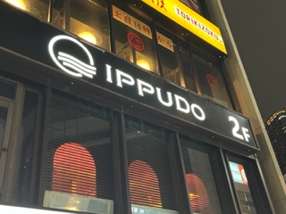
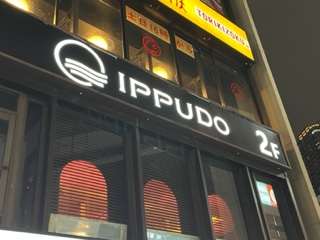
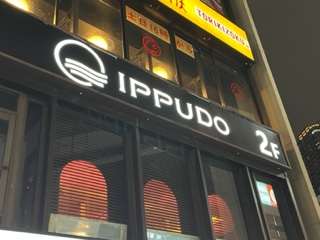

XBP_HPsample
印象に残る看板

こちらは人気のあるラーメンチェーンの一風堂というお店です。
私は、日本語で書いてある看板しか観たことありませんでしたが、
横文字で書いてあるものがあり外国人にもわかりやすいようにしているんだなと感じました。
この写真は私が好きなラーメン屋さんの看板です！
赤い看板に白文字のラーメン屋さんは絶対おいしいと思います。
これの写真はシュウマイが有名な崎陽軒の看板です。このマークを見るとシュウマイを食べたくなります！

 
